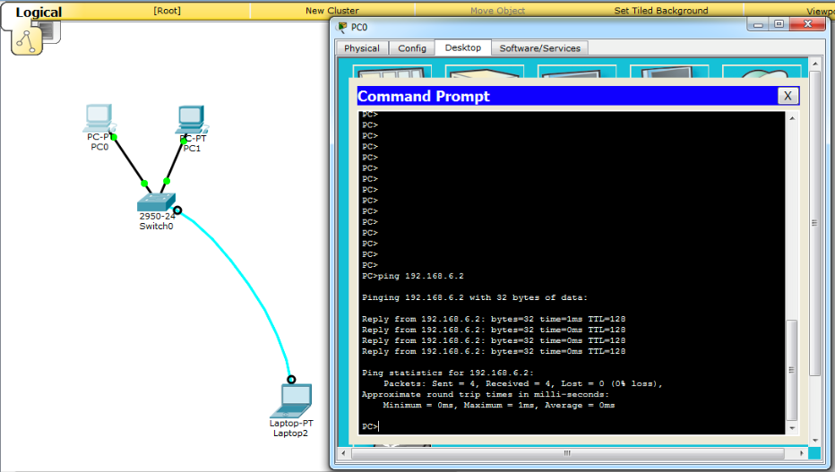
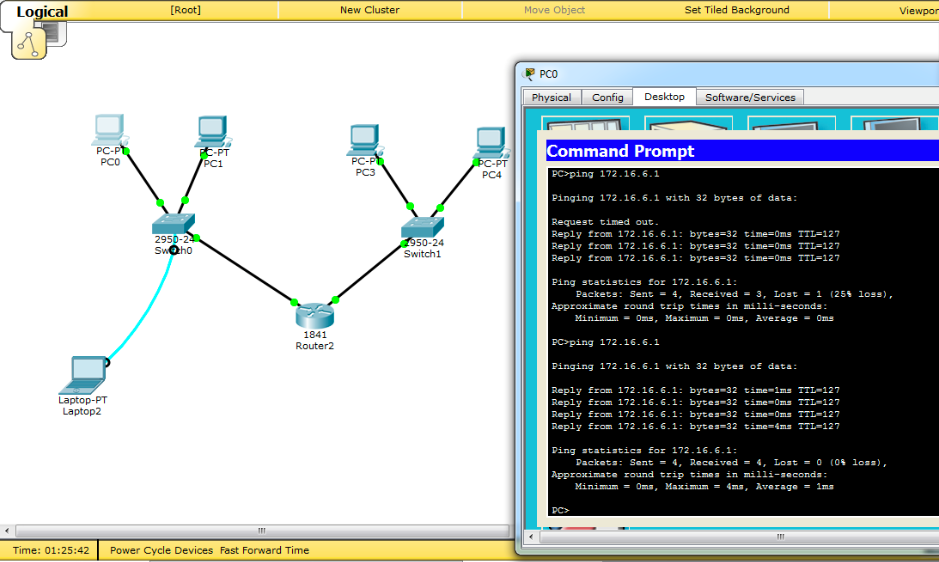
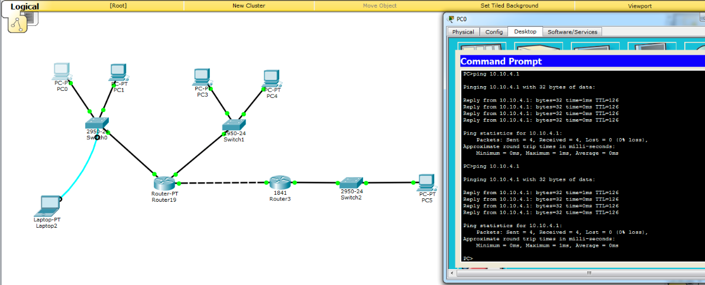

Личная страница по предмету "Интернет технологии"
Орлова Ольга , ИДМ 17-04
Задачи:
-
Лабораторная работа №1
Экосистема разработки программ с открытым кодом":Создание персональной страницы-отчета на github и работа с git
-
Лабораторная работа №2 "Разработка простого веб-приложения":
Проектирование и разработка индивидуального или коллективного веб-приложения (SPA) с использованием html,css,js + json,xml
-
Лабораторная работа №3 "Настройка локальной сети передачи данных":
Настройка коммутаторов и маршрутизаторов
-
Самооценка прохождения теста по инновациям, формулировка одного вопроса по теме "Интернет-технологии" в одной из форм, встречающихся в тесте (выбор одного, выбор многих, упорядочивание, соответствие)
Лабораторная работа №1
-
Регистрация на GitHub.
-
Создать и загрузить персональную веб страницу-отчет в репозиторий ИДМ-17 по курсу "Интернет-технологии" на GitHub.
Лабораторная работа №2
Разработка простого веб-приложения
Задачи:
-
Создать приложение, которое будет выводить данные из публичного источника на страницу.
-
Прописать стили страницы : SCSS
-
Прописать js функционал : JS
-
Результат: Игра "Тетрис"
Фигурки управляются с помощью стрелок на клавиатуре : ← ↑ ↓ →.
Лабораторная работа №3
Настройка локальной сети передачи данных
Задачи:
Настройка коммутаторов и маршрутизаторов.
Отчет по лабораторной работе. Вариант 6.
Цель лабораторной работы: ознакомиться с принципами работы компьютерных сетей, базовой настройкой сетевого оборудования и статической маршрутизацией.
Исходные данные:
| LAN A | LAN B | LAN C | |
|---|---|---|---|
| Количество хостов в сети | 67 | 13 | 675 |
| Маска | 255.255.255.128 | 255.255.255.240 | 255.255.252.0 |
| Subnet | 192.168.6.0 | 172.16.6.0 | 10.10.4.0 |
| IP адрес первого хоста: | 192.168.6.1 | 172.16.6.1 | 10.10.4.1 |
| IP адрес последнего хоста | 192.168.6.126 | 172.16.6.14 | 10.10.7.254 |
| Broadcast | 192.168.1.127 | 172.16.6.15 | 10.10.7.255 |
- Разместить на рабочем поле коммутатор и два компьютера и соединить их. Затем нужно настроить адресацию на добавленных компьютерах и выполнить проверку работоспособности сети
 -
Далее добавим на карту сети еще один коммутатор и два компьютера, подсоединенные к нему. Настроим их используя IP-адреса из диапазона LAN B.
Проверим работоспособность, выполнив Ping-запрос с компьютера в сети LAN A на компьютер в сети LAN B.  -
Далее добавим на карту сети еще один маршрутизатор, коммутатор и подключенный к нему компьютер. Соединим между собой два маршрутизатора, выделив им адреса из небольшой подсети с маской 255.255.255.252. Настроим компьютер, используя IP-адрес из диапазона адресов для сети LAN C, а также укажем шлюз. Также можно посмотреть все добавленные статические маршруты

- Попробуем получить доступ к компьютеру в сети LAN C, отправляя Ping-запрос с компьютера в сети LAN A. Видно, что запросы успешно доходят до другой подсети. 
-
Последним пунктом остается позаботиться о безопасности сетевого оборудования и настроить пароли для привилегированного режима, доступа по консольному порту и удаленного подключения через Telnet. Пароль можно задать двумя командами: использую enable password и enable secret. Разница заключается в том, что в первом случае пароль будет храниться в открытом виде в памяти маршрутизатора или коммутатора, а во втором случае будет храниться лишь его хеш-функция. Если все было настроено верно, то откроется удаленное подключение к маршрутизатору. Таким образом, авторизовавшись с только что установленным паролем, можно удаленно выполнять настройку сетевого оборудования.

Подготовка к экзамену
Вопрос по теме "Интернет-технологии".
Выберите ОДИН правильный ответ:
В имени «edu.stankin.ru» доменом какого уровня является «stankin»?
- А) Верхнего
- Б) Второго
- В) Третьего
- Г) Промежуточного
Правильный ответ: Б
Прошлогодняя личная страница
Прошлогодняя статья
Новая статья
Проект